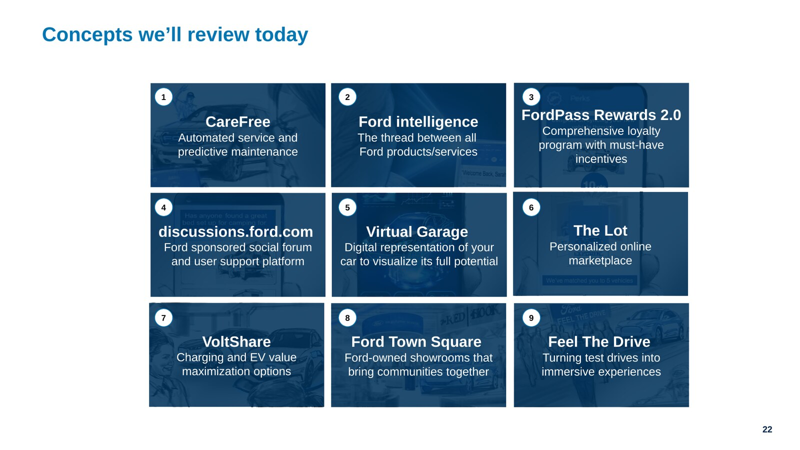
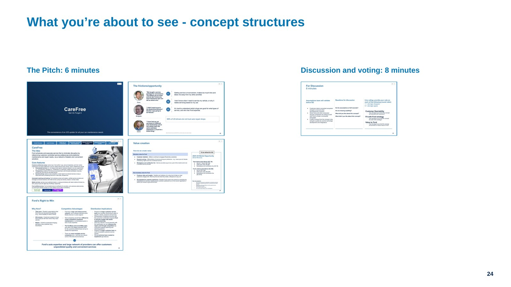
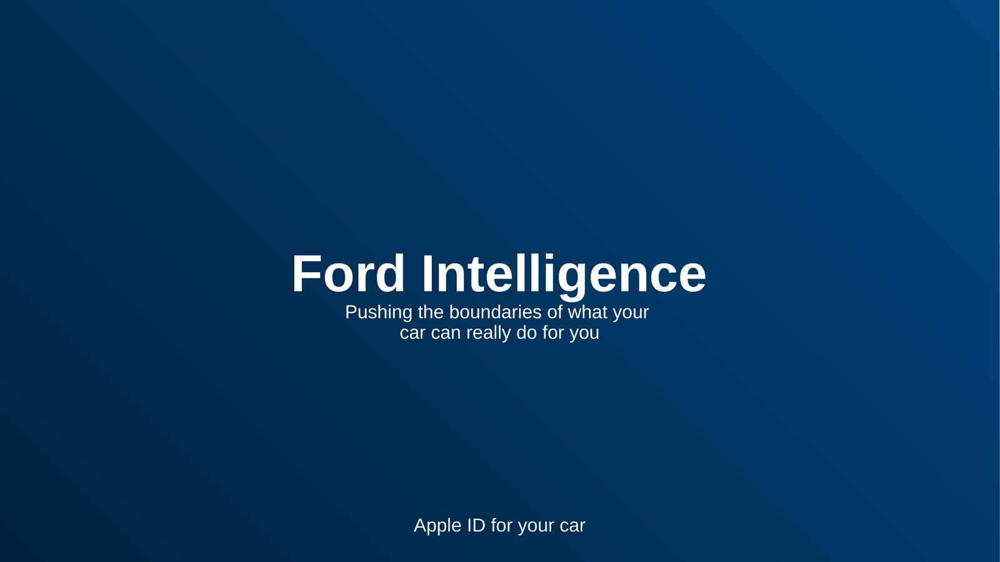

Redesigning what it means to own a car.
A major automotive OEM brought us in to imagine the 2025 ownership experience — and to translate that vision into a portfolio of investable concepts a venture board could actually act on.
Jump to results ↓
The OEM's customer loyalty and engagement were under pressure from fragmented touchpoints, opaque service decisions, and disconnected loyalty programs. We were asked to develop an unconstrained, hero ownership experience for 2025 — one that aligned to the brand's promise to power the freedom to move with thrilling, rewarding experiences that connect and energize.
The bet: if the ownership journey could be re-cut around moments customers actually value, the OEM could convert a transactional relationship into a recurring one.
Rather than starting from a blank page, we synthesized 250+ existing files across client research, in-flight projects, and competitor and non-auto exemplars — folding their signal into a single insight map.
In parallel we ran 20+ end-user interviews spanning current, former, and future OEM owners — across BEV and ICE vehicles, subscription-service users, and owners of competitor and upmarket brands. Six external experts from NIO, Tesla, REI, and Marriott stress-tested our assumptions on autonomous systems, retail, and loyalty.
We mapped industry revenue pools to locate emerging service and ecosystem opportunities, built on existing frameworks (Customer Wheel, FordPass, Enterprise Connectivity, TCLF) to accelerate buy-in, and developed 9 priority concepts pitched to the venture board — OEM leadership, BCG partners, and the design team.
Trust breaks down as customers continue to feel that OEMs are taking advantage of them. Communicate with transparency — from clear pricing to proactive discussion around expectations that are not being met.Synthesized insight · customer research


We delivered an aspirational 2025 hero ownership journey told from the customer's perspective — a single, end-to-end experience spanning Guided Discovery, Joyful Purchase, Rocket Set-Up & Onboarding, Progressive Learning & Smart Assistance, Effortless Maintenance & Repair, Rewarded Membership, and Easy Renewal. Each stage was anchored to documented customer pain points and designed to convert friction into moments of brand value.
Underneath the journey sat nine priority concepts — CareFree predictive service, Ford Intelligence, FordPass Rewards 2.0, discussions.ford.com, Virtual Garage, The Lot marketplace, VoltShare, Ford Town Square, and Feel The Drive. Each was pitched with a thesis, business model, value-creation logic, right-to-win, and the assumptions to validate next — ready for the venture board to greenlight into IS2.
Results
At venture-board handoffPriority concepts identified and pitched — from predictive maintenance to experiential retail and an integrated loyalty program.
A validated 2025 hero journey aligned to Welcoming, Straightforward, Passionate, and Ingenious.
Venture-board alignment on desirability, strategic fit, and next-phase focus — clearing the path to concept definition and investment.
Key assumptions documented for the follow-up sprint — including 30% consumer interest in connected service and 4% independent-shop adoption.